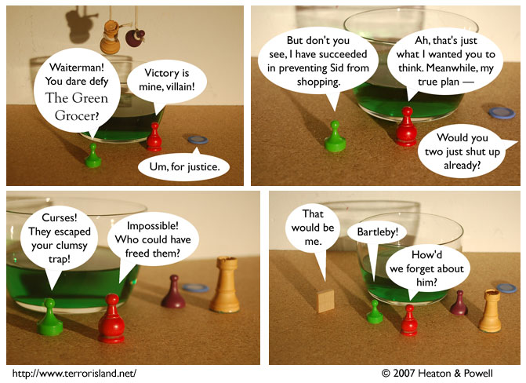

Strip #200
— Friday, September 21, 2007
Bartleby saves the day, as per usual
Notes, Thoughts, &c.
Ben’s Notes
Well, looks like Terror Island has made it to 200 strips. In celebration, we’re bringing you a bit more of the fan-favorite character Bartleby, Sid and Stephen’s other roommate who only exists once every 100 strips.
Lewis’s Notes
Ben and I decided that we needed more strips and punchlines that only make sense to hardcore readers. Look forward to jokes so inaccessible even we, the authors, don’t get them.